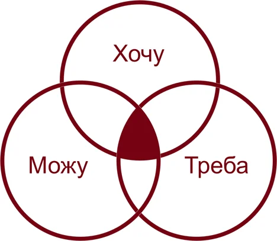
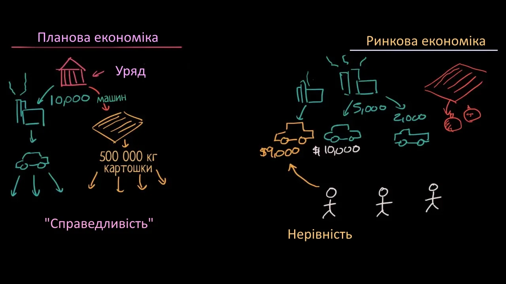

Програміст
ГолосуватиЧому "Вибір професії" руйнує життя більшості выпускників шкіл?
Статистика - річ вперта ...
Одне з найважливіших рішень, які людина приймає в своєму житті це вибір професії та кар'єрного шляху, який визначить якості всього подальшого життя. На жаль, дуже часто подібний вибір здійснюється без належного обмірковування, на рівні інтуїції або сьогохвилинних бажань і захоплень.
Яка ж кількість випускників використовує свою освіту і працюють за фахом? На сайті «Робота в Харкові» було проведено дослідження з метою дати відповідь на це питання.
Основні причини, чому випускники ВНЗ не працюють за фахом:
Таким чином, можна зробити висновок, що ще до вступу до ВНЗ, люди дуже мало знали про свою майбутню професію. Який алгоритм дій призводить майбутнього випускника до таких наслідків?
Алгоритм, що керує вами
Если школьник хочет определится, кем ему работать в будущем, то со 100% вероятностью полезет в Интернет, ведь это самый большой источник информации в наше время. В процессе поиска, он наткнётся на сайты, которые в той или иной степени показывают алгоритм, основаный на японской технике Икигай.

На сайтах з профорієнтації виділяються всього 3 компоненти: Хочу-Можу-Треба.
- Хочу: Інтереси, схильності, мотиви, плани, професійні наміри, це те заняття, яке робиться з бажанням, за власною ініціативою.
- Можу: Можливості особистості, тобто: стан здоров'я, наявний досвід, психофізіологічні якості, здібності до різних видів діяльності.
- Треба: Потреби суспільства, тобто: уявлення про обов'язки, моральні установки, ціннісні орієнтації, знання світу професій і про перспективні спеціальності, які користуються попитом на ринку праці, і ймовірність працевлаштування за обраною професією.
Відвідувач сайту отримує алгоритм, який зводить його до пошуку відповідей на ці питання: Що я хочу? Що я можу? Що потрібно на ринку? Зрештою з допомогою фахівців, профорієнтаційних тестів, ви визначаєтесь, зробивши компромісне рішення, задовільне 3-м компонентам. Такий алгоритм схожий на вибір одягу в супермаркеті, ви ніби оглядаєте одежу, міряєте. Відповідно до цього алгоритму, ви не маєте чіткого плану дій за неправильного вибору.
Світ дуже швидко змінюється, але за таким планом дій ви зовсім не адаптуєтесь до цих змін, а просто обираєте!
Наш алгоритм
Крок №1: Базові способи заробітку грошей
Дізнайтеся про базові способи заробытку. Це допоможе переглянути альтернативні варіанти при виборі професії та отриманні подальшої роботи
Записатись на вебінарКрок №2: Базові принципи ринкової економіки. Конкуренція

Ви повинні виробити навик конкуренції, адже світ безперервно змінюється
Записатись на вебінарКрок №3: Механізми формування команди. Алгоритми прийняття кадрових рішень
Алгоритми прийняття кадрових рішень відіграє важливу роль для вас. Ви повинні вміти продати себе і свої вміння
Записатись на вебинарПомилки, які часто допускаються при выборі профессії
Стале судження про престижність професії
Якщо сучасному тинейджеру поставити вибір між фрезерувальником і психологом - очевидно, вибір припаде на другий варіант. Це стандартний шаблон мислення, який нав'язує нам громадську думку, мабуть кліше, яке асоціативно закріплюється за певним колом, так би мовити "не модних" професій. Попит на ринку професій, навіяний сьогоднішнім днем, звичайно, варто враховувати, але куди важливіше прислухатися і враховувати власну думку, інтереси та уподобання.
Небажання розібратися в собі
Визначити сильні та слабкі сторони допоможуть не тільки психологи, а й друзі, родичі. Але навіть наявність навичок не є гарантією отримання професії, якщо у людини є прямі протипоказання. Наприклад, люди зі слабким серцем не стають льотчиками.
Знання тільки про одну сторону професії
За легкістю, з якою актор створює на сцені образ, стоїть наполеглива щоденна праця. А журналісти не завжди виступають у телепередачах. Найчастіше вони опрацьовують велику кількість інформації, архівів, розмовляють з десятками людей, перед тим як підготувати 10-хвилинне повідомлення, яке до того ж озвучить хтось інший (диктор на телебаченні).
Вплив інших людей на вибір
Існує стійка думка, що оточення формує людину. Добре, коли це оточення складається з самодостатніх індивідуумів з гідним власним прикладом успішної людини. Коли мова йде про таких же підлітків, як і ти, навряд чи вибір професії стає глибоко продуманою акцією. Швидше за все, це просто рішення, прийняте «за компанію». Варто пам'ятати, що професію ти підбираєш для себе, а не для когось іншого.
Ставлення до вибору професії як до незмінної
У багатьох абітурієнтів завжди є страх. Цей страх стосується міркувань на тему: «Вибір тут і зараз визначить напрямок діяльності всього мошл подальшого життя, і я нічого вже не зможу змінити». Але в наш час все більше цінуються багатопрофільні фахівці, тому не варто зупинятися на першій, а слід і надалі розвивати і вдосконалювати себе. Ніхто не знає, який повотор вас очікує: можливо, саме та, перша, ненависна професія - в скрутну хвилину прогодує вас.
Профессії
Якщо ви хочете більше дізнатись про різні професії, то у нас для вас є гарні новини! Ми проводимо онлайн-голосування, де ви зможете вирішити, чи має бути опис тієї чи іншої професії. Зробіть свій вибір